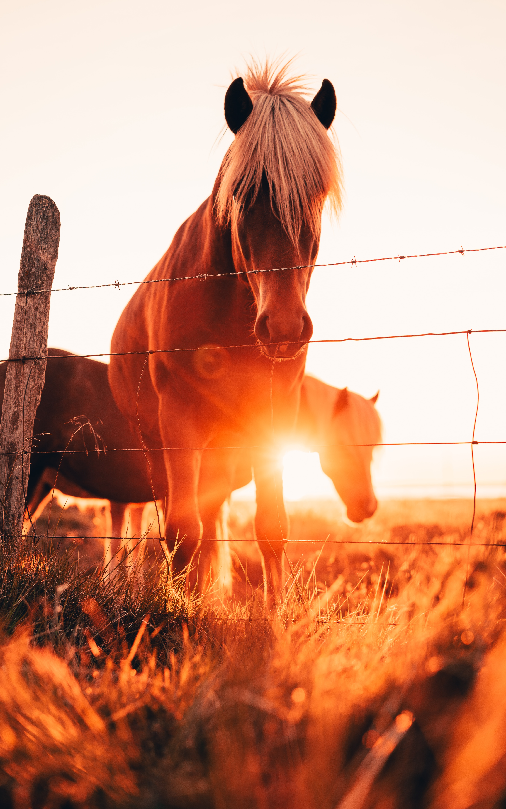
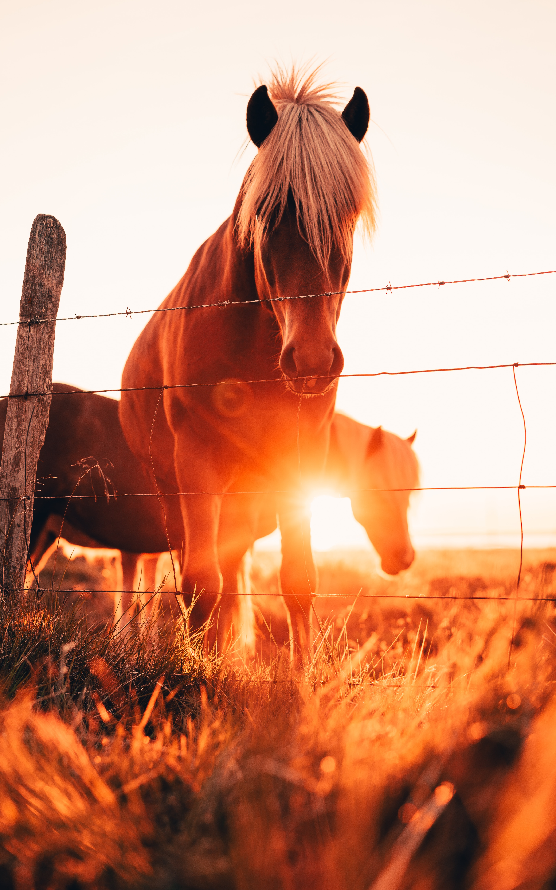

This past slide is from Miss Katie's Horse Pathology Simplified class on outschool. She is an amazing teacher and I greatly recommend her. You can find her classes and many others on outschool.com - note: unfortunetly classes are only avalible for kids under the age of 18.
Tips!
Cleaning tips -
Use olive oil to get rid of scratches on your saddle!
Have thrush ointment - horse hoof bacteria is bad!
Get cowboy magic de-tangler!
Get horse rubber bands
Apple cider vinegar works on horse warts (somewhat...)
strategy tips -
Use baby diapers to hold ointment and put on enjerys.
Keep horses away from manure so flies don't bite them.
In the summer time make sure you let your horse stand in a puddle on a tarp for a few minutes to help their hoofs. Only do this if its super dry where you are.
Add koi or goldfish to each water trough to keep it clean.
horse care -
Dry horses legs and hoofs with a soft face towel in the cold or wet months to prevent mud fever.
Clean and dry horses legs, then oil them with special baby oil for optimal care in the cold months.
If you put the oil in a spray bottle then it will help, make sure its a gentle spray bottle.
keep your horse clean! make sure to unknot their main / tail and be sure to pick their hoofs each day.
Get a bot fly knife for scraping off bot fly eggs.
If it's been frosty or really cold, check your horse's water to make sure it's clean and not full of ice!
Put a football or something like it inside your horse's water so the water is constantly moving, preventing ice from forming.
Have a hot water faucet or a way to heat water to a lukewarm temperature!
Get the freshest hay so your horse can get the most nutrients ( the first clippings are the best! )
vet and farrier tips -
Offer your vet coffee ( often they will not turn it down )
Tell your vet in the beginning how much you can spend on any procedure.
Establish a payment date.
other -
MSM and glucosomine are good safe supplements to give to your horses twice a day. use 1/4 scoop in your horses morning grain and the same in the evening, this will help with joint movement.
get a foldable travel pet bowl for shows in case your horse needs water during a class.
Four-Ingredient Horse treats,
3 cups oatmeal oats
1 cup applesauce
½ cup flour
¼ cup molasses
Mix all ingredients together
Form into small balls
Bake 350 for 10-15 minutes
horse colic -
If your horse has a mild colic then walking them around is worth a shot. don't let them lay down because you never know whether they will get back up. you shouldent force them walking, if they dont want to move then it could cause stress to walk them but overall movement is beter.
don't add to the fire. don't let a colicing horse eat or drink! it wont help.
rub bees wax on leather saddle to help with grip and its good for your saddle!
Looking at horses!
bring a trusted horse person!
Things to look for -
How does the seller react around the horse.
How sleepy or tired the horse seems.
Ask seller questions
Age
Experience level
How long have you had this horse?
Look at horses' teeth.
Look at their hoofs and legs.
How big - bigger is better
Good shape and dish to their feet
Ride the horse - make the seller get on the horse first. Then ask your trusted horse person ride the horse and tell you whether this is a good fit for you.
If you decide to get the horse, first get a trusted vet to do the pre-purchase exam only if the horse is over $1,500. Know that no horse is perfect.
Ask for a trial period - bring it to your barn and test how behavior is for a month. Give them time. Don't expect too much in the first few weeks.
buying from an auction
Bring enough cash to buy a horse outright.
Arrive a few hours before the auction starts, give yourself time to look at everything.
Go to the office first and get your bidding number.
Then look at the horses.
Find a horse you are interested in.
Interact with it.
Look at temperament.
Make sure they are not drugged. - loose lip and droopy head.
Look at teeth.
Look at legs - pick up legs.
See if you can ride the horse or see them ridden.
Watch them tack up the horse - look for behavioral changes.
Make sure you can see the horses and hear the auctioneer.
DO NOT BE THE FIRST TO BID. the number may drop from start time.
Listen for the first word of the auctioneer's sentence: that's the price.
Nothing is final, tell you go to the registration office and pay for the horse.
The seller gets final say, they may change the price at the end. They will ask you first though.
Always pay at the auction office.
Then go collect the horse.
You need to go to the horse's stall and lead it to the trailer. No one else will help you feed or move your horse.


 
